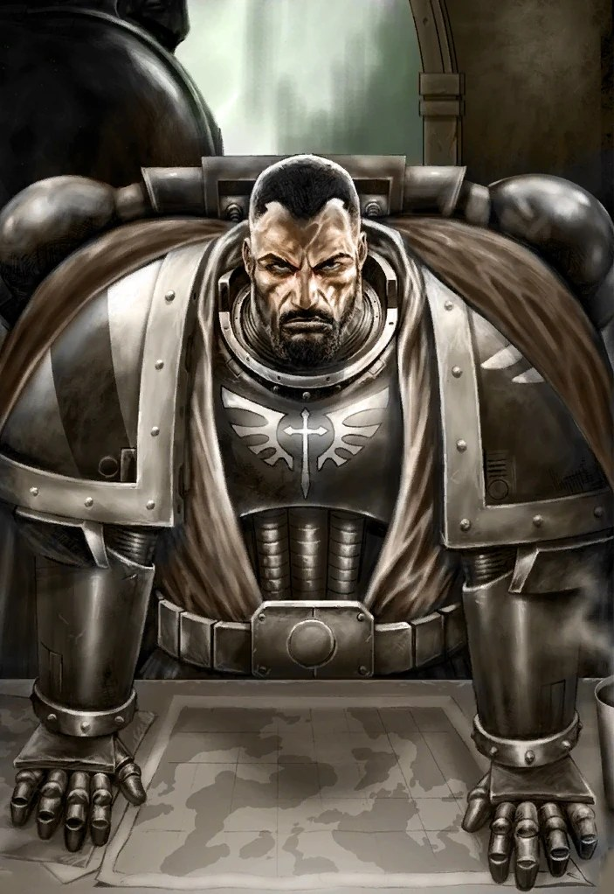
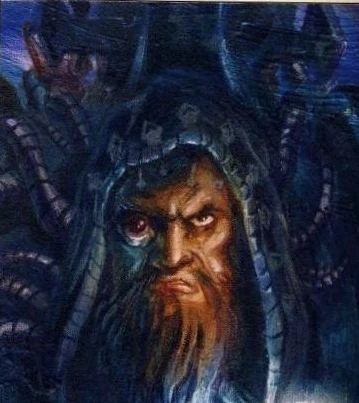

Luther
| Luther | |
|---|---|
| First of the Fallen | |
 Luther as master of Caliban, from a sealed record of the Dark Angels | |
| Master of Caliban | |
| Tenure | Late M30 – 014.M31[a] |
| Appointed by | Lion El'Jonson |
| Second-in-command of the Dark Angels Legion | |
| Tenure | Late M30 |
| Born | M30, Caliban |
| Status | Freed from The Rock in the early 42nd millennium; whereabouts unknown |
| Allegiance | The Order; then the Emperor; then Caliban and the powers of Chaos |
| Order | The Order, the knightly brotherhood of Caliban |
| Relatives | Lion El'Jonson (foster brother) |
| Known for | Finding the Lion; the rebellion of Caliban; the duel that destroyed the planet; ten thousand years as the Dark Angels' prisoner |
Luther, called Sar Luther as a knight, was a knight of Caliban who found the infant primarch Lion El'Jonson in the forests, raised him as a brother, and became his second-in-command in the Dark Angels Legion. Sent back to Caliban in the last decades of the Great Crusade to command its garrison, he turned the world and its Legionaries against the Lion during the Horus Heresy. When the Lion returned, the two fought a duel in which Caliban was destroyed, the Lion was lost, and Luther's followers were cast through space and time as the Fallen. Luther alone was captured.[1][2]
For ten thousand years Luther was held in stasis in the deepest cell of The Rock, the fortress built on the surviving fragment of Caliban, where each Supreme Grand Master of the Dark Angels questioned him as an oracle. He insisted that the Lion would return and absolve him. In the Era Indomitus the Rock was attacked by daemons, and when they withdrew, Luther was gone. Shortly afterwards the Lion did return.[1][3]
Early life
[edit]Luther was a knight of the Order, a brotherhood of Caliban that took recruits of any birth and hunted the Great Beasts of the world's forests. Imperial records describe him as the greatest knight of his generation. As a young man he led a hunting party that found a wild man-child in the forest. Some of the knights wished to kill it as another beast; Luther argued for mercy and took the boy into his own care. He named him Lion El'Jonson, "the Lion, Son of the Forest", and raised him as a knight.[1]
The boy learned faster than anyone, Luther included. Together they led the Order in a crusade that exterminated the Great Beasts and united Caliban, and the Lion became its Grand Master. Luther, who had once been the first knight of Caliban, was left in his shadow; Dark Angels records hold that the two were nevertheless as close as brothers.[1]
Great Crusade
[edit]
When the Emperor came to Caliban in the late 30th millennium, the Lion took command of the I Legion, and Luther followed him as an officer of the Legion. He received the Legion's augmentations late in life and was never a full Space Marine, but he served as the Lion's second-in-command.[4]
Sarosh
[edit]At the world Sarosh, whose rulers secretly worshipped Warp entities they called the Melachim, a shuttle of the Saroshi envoy was brought aboard the flagship Invincible Reason carrying a hidden atomic weapon. Luther discovered it, and according to the account of the Librarian Zahariel, he hesitated: if he did nothing, the Lion would die and the Legion and Caliban would be his. He then told Zahariel how bitterly he resented living in the Lion's age, before turning back and helping him blow the bomb into space.[1][5]
Exile
[edit]Shortly after Sarosh, the Lion sent Luther, Zahariel and a number of Calibanite officers back to Caliban, officially to oversee recruitment. The Lion never explained the decision and never spoke of them again, and the rumours that grew in the Legion ranged from a quarrel over Sarosh to blame for the bomb. Luther felt that he had been exiled by the man he had raised. Dark Angels accounts describe the cause as the Lion's suspicion, Luther's ambition or both.[1]
For some fifty years Luther ruled Caliban and built up the Legion's reserves there. In 970.M30 he disobeyed the Lion's order to remain on Caliban and brought his warships to the aid of Horus at Zaramund; he was stripped of them by Legion forces, among them Corswain's 9th Order, a humiliation the Chapter's scholars count among the grievances that drove him on.[1][2]
Rebellion and the Fall of Caliban
[edit]In the last years before the Heresy Caliban was troubled by a resurgence of the Great Beasts and by an insurgency of former knights who believed the Lion had betrayed the Order. Zahariel's investigations found a cabal of Terran sorcerers behind both. When word reached Caliban of Horus's rebellion, Luther declared the world independent of both Terra and the Lion. Dark Angels tradition holds that by then he and the garrison had come under the influence of Chaos.[1][5]
The Lion, with the Space Wolves and the Ultramarines, reached Terra only after the Siege of Terra had ended in 014.M31. He then returned to Caliban, and was fired upon from the surface. Learning that Luther had turned the garrison and the new recruits against him, the Lion ordered the planet bombarded and landed to assault the fortress-monastery of the Order. The two met in single combat. Luther, made a champion of the Dark Gods, was now a match for a primarch; the duel levelled the fortress while the bombardment tore at the planet. The Lion wounded Luther but could not bring himself to kill him, and Luther struck him down with a sorcerous blow. At that moment, the Dark Angels' records say, a veil lifted from Luther's eyes, and he saw what he had done.[1][2]
The Warp then swallowed the Fallen, scattering them through space and time, and Caliban broke apart. Only the rock on which the fortress stood survived. When the Dark Angels entered the ruins they found Luther broken and the Lion gone. Luther insisted that the Watchers in the Dark had taken the primarch away and that he would return.[1][b]
Prisoner of the Rock
[edit]
The surviving fragment became The Rock, the fortress-monastery of the Dark Angels Chapter. Near its heart, behind adamantium gates and walls inscribed with wards meant to keep things out and to keep something in, Luther was held in a stasis field. Only the Supreme Grand Master and the Watchers in the Dark were allowed to enter. Each Supreme Grand Master in turn took the long walk to the cell to seek a confession, and none received one.[1]
The Supreme Grand Masters used Luther as an oracle. In moments of lucidity he spoke of events that would happen or might happen, gave the names and hiding places of members of the Fallen, and revealed relics of the I Legion buried beneath the old fortress. Mostly he raved, repeating that he had no need of repentance, that the Lion would return to absolve him, and, in the 41st millennium, that he could feel the Lion close at hand.[1]
Escape
[edit]After the opening of the Great Rift in 999.M41, the Rock lay in the Imperium Nihilus. As the Noctis Aeterna passed, a daemon army under the Fallen Daemon Prince Marbas broke through its void shields and fought through its docks, halls and dungeons, then vanished as suddenly as it had come. Supreme Grand Master Azrael found Luther's cell empty. He believed the attack had been a diversion to free the prisoner, and could share the knowledge with no one.[1][6]
The Lion returned to the Imperium soon afterwards, in the early 42nd millennium, as Luther had foretold. Whether the two events are connected, and where Luther now is, are matters the Dark Angels do not discuss. The hunt for Luther and the Fallen continues.[3][6]
Legacy
[edit]Luther's betrayal is the secret around which the whole of the Unforgiven is built. The Dark Angels and their successors hunt the Fallen in secret, keeping the truth even from most of their own brothers, because they could not bear the Imperium to know that part of the First Legion betrayed the Emperor. The Ordo Malleus suspects much of the story; the Dark Angels confirm none of it.[1]
Timeline
[edit]| Date | Event |
|---|---|
| M30 | Luther finds the Lion; the crusade against the Great Beasts |
| Late M30 | The Emperor comes to Caliban; Luther joins the I Legion |
| c. 955.M30 | Sarosh; Luther sent back to Caliban[c] |
| 970.M30 | Zaramund; Luther stripped of his warships |
| 014.M31 | The Lion returns; duel and Fall of Caliban; Luther captured |
| 014.M31–M41 | Held in stasis beneath the Rock |
| Early M42 | Daemonic assault on the Rock; Luther freed |
See also
[edit]Notes
[edit]- ^ Luther's return to Caliban is dated from the Sarosh campaign, about fifty years before the Heresy; the end of his rule from the Lion's return at the close of the Heresy.
- ^ The Fallen tell a different story: that the Lion destroyed Caliban in his anger and that they were the loyal party. The Dark Angels hold that the destruction was Luther's doing alone.
- ^ Estimated: the exile lasted about fifty years before the Heresy began in 005.M31.
References
[edit]- ^ a b c d e f g h i j k l m n Book of the Unforgiven (sealed). Inner Circle of the Dark Angels, The Rock.
- ^ a b c Chronicles of the Heresy (sealed). Logos Historica Verita, Terra.
- ^ a b Records of the Indomitus Crusade (ongoing). Office of the Lord Commander.
- ^ Liber Primarchus (M32, revised M41). Administratum Archive, Terra.
- ^ a b Zahariel (c. M31). Testament (sealed). Inner Circle of the Dark Angels, The Rock.
- ^ a b Azrael (M42). Private Journal of the Supreme Grand Master (sealed). The Rock.